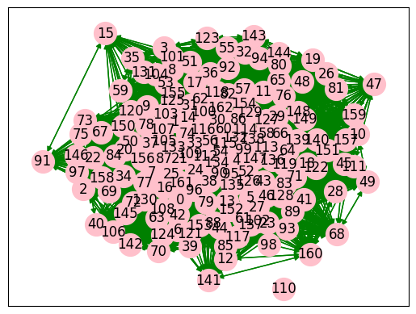

mencari kata kunci pada berita#
preprocessing text#
import library#
import pandas as pd
import nltk
import re
import networkx as nx
import matplotlib.pyplot as plt
from collections import Counter
from nltk.corpus import stopwords
from nltk.tokenize import word_tokenize
from tqdm import tqdm
from sklearn.metrics.pairwise import cosine_similarity
from sklearn.feature_extraction.text import CountVectorizer
from itertools import combinations
load data#
df = pd.read_csv('berita_kompas.csv')
df.head()
| judul | isi | tanggal | kategori | |
|---|---|---|---|---|
| 0 | Profil 5 Pimpinan KPK Periode 2024-2029, Didom... | JAKARTA, KOMPAS.com - Komisi III Dewan Perwaki... | Kompas.com - 21/11/2024, 13:51 WIB | Nasional |
| 1 | Profil dan Harta Benny Mamoto, Dewas KPK Perio... | JAKARTA, KOMPAS.com - Komisi III DPR RI akhirn... | Kompas.com - 21/11/2024, 13:50 WIB | Nasional |
| 2 | Bareskrim Polri Tangkap 1 Buron Kasus Judol Si... | JAKARTA, KOMPAS.com - Direktorat Tindak Pidana... | Kompas.com - 21/11/2024, 13:44 WIB | Nasional |
| 3 | Berpegang pada Prinsip GCG, KAI Pastikan Layan... | KOMPAS.com - Vice President (VP) Public Relati... | Kompas.com - 21/11/2024, 13:44 WIB | Nasional |
| 4 | Ridwan Kamil Janji Buka Rincian APBD ke Publik... | JAKARTA, KOMPAS.com - Calon gubernur Jakarta n... | Kompas.com - 21/11/2024, 13:42 WIB | Megapolitan |
preprocessing data#
def preptext(text):
text = re.sub(r'((www\.[^\s]+)|(https?://[^\s]+))', ' ', text) # Menghapus https* and www*
text = re.sub(r'[\s]+', ' ', text) # Menghapus tambahan spasi
text = re.sub(r"[^a-zA-Z :\.]", "", text) # Menghapus tanda baca
text = re.sub(r'\d', ' ', text)#menghapus angka
text = re.sub(r'#([^\s]+)', ' ', text)#menghapus hashtag
words = word_tokenize(text.lower())
sw = set(stopwords.words("indonesian"))
words = [word for word in words if word.lower() not in sw]
return ' '.join(words)
df['isi_baru'] = df['isi'].apply(preptext)
print(df['isi_baru'].head())
0 jakarta kompas.com komisi iii dewan perwakilan...
1 jakarta kompas.com komisi iii dpr ri memilih a...
2 jakarta kompas.com direktorat tindak pidana si...
3 kompas.com vice president vp public relations ...
4 jakarta kompas.com calon gubernur jakarta nomo...
Name: isi_baru, dtype: object
memisahkan kalimat#
no = int(input('Masukkan berita ke berapa yang ingin di cari kata kuncinya : '))
kalimat = nltk.sent_tokenize(df['isi_baru'][no])
kalimat = [sentence.replace('.','') for sentence in kalimat]
kata = nltk.word_tokenize(df['isi_baru'][no])
kata = list(set(key for key in kata if key != '.'))
kalimat
---------------------------------------------------------------------------
StdinNotImplementedError Traceback (most recent call last)
Cell In[4], line 1
----> 1 no = int(input('Masukkan berita ke berapa yang ingin di cari kata kuncinya : '))
2 kalimat = nltk.sent_tokenize(df['isi_baru'][no])
3 kalimat = [sentence.replace('.','') for sentence in kalimat]
File ~\AppData\Roaming\Python\Python312\site-packages\ipykernel\kernelbase.py:1281, in Kernel.raw_input(self, prompt)
1279 if not self._allow_stdin:
1280 msg = "raw_input was called, but this frontend does not support input requests."
-> 1281 raise StdinNotImplementedError(msg)
1282 return self._input_request(
1283 str(prompt),
1284 self._parent_ident["shell"],
1285 self.get_parent("shell"),
1286 password=False,
1287 )
StdinNotImplementedError: raw_input was called, but this frontend does not support input requests.
kata
['diambil',
'kepemimpinan',
'mengajukan',
'penghargaan',
'pencabutan',
'operasi',
'bukti',
'kekuasaan',
'berdasar',
'proses',
'harapan',
'ketidakadilan',
'bamsoet',
'pemerintahan',
'terlibat',
'pandangan',
'mprs',
'gerakan',
'kesempatan',
'rangkul',
'surat',
'nama',
'upaya',
'juni',
'pemulihan',
'majelis',
'khusus',
'gs',
'obrolan',
'september',
'krisis',
'komitmen',
'bambang',
'soekarno',
'beliau',
'fasilitas',
'istimewa',
'pertanggungjawaban',
'negara',
'hasil',
'memuat',
'mengakui',
'ketetapan',
'hakhak',
'pidato',
'gerindra',
'dianggap',
'perumahan',
'acara',
'keterlibatannya',
'sejarah',
'dialami',
'kebijakan',
'hukum',
'hakhaknya',
'soesatyo',
'berkhianat',
'pemberontakan',
'laporan',
'bentuk',
':',
'sah',
'bangsa',
'politik',
'nomor',
'jakarta',
'resmi',
'menetapkan',
'situasi',
'status',
'memadai',
'keterlibatan',
'penutup',
'ditolak',
'baca',
'rinci',
'periode',
'ketidakpuasan',
'sidang',
'mencabut',
'dilemparkan',
'kemerdekaan',
'peristiwa',
'tonggak',
'bayangbayang',
'memuncak',
'panglima',
'melekat',
'memulihkan',
'kontroversi',
'tap',
'menimbulkan',
'pahlawan',
'dilanjutkan',
'senin',
'menggelar',
'nasional',
'pelengkap',
'dibuktikan',
'tuduhan',
'meninggalkan',
'keluarga',
'babak',
'bertahuntahun',
'dibayangi',
'direhabilitasi',
'tertulis',
'politiknya',
'keputusan',
'stigma',
'kompas.com',
'kontribusi',
'dicabut',
'langkah',
'dukung',
'terbukti',
'komunis',
'disapa',
'mengembalikan',
'keamanan',
'orde',
'pengadilan',
'karno',
'pdip',
'penetapan',
'peralihan',
'rakyat',
'partai',
'keuntungan',
'pulihkan',
'bersalah',
'penyerahan',
'pki',
'permusyawaratan',
'guntur',
'mantan',
'kepala',
'ketua',
'momen',
'yuridis',
'mengkaji',
'presidenpresiden',
'januari',
'sekjen',
'memenuhi',
'meninjau',
'tambahan',
'mpr',
'peran',
'posisinya',
'ulang',
'mandat',
'didasarkan',
'nawaksara',
'indonesia',
'dikenal',
'presiden',
'dukungan',
'maret',
'lelaki',
'mencakup',
'terkait',
'pengkhianat']
modeling#
membuat matrix#
def vektor_kata(data):
vektor_kata = pd.DataFrame(0, index=range(len(data)), columns=kata)
for i, sent in enumerate(data):
# Tokenisasi kalimat menjadi kata-kata
kata_kalimat = word_tokenize(sent)
# Hitung frekuensi kata menggunakan Counter
freq_kata = Counter(kata_kalimat)
# Update DataFrame dengan frekuensi kata yang ditemukan dalam kata
for word, count in freq_kata.items():
if word in kata:
vektor_kata.at[i, word] = count
return vektor_kata
vektorisasi_kata = vektor_kata(kalimat)
print(vektorisasi_kata)
diambil kepemimpinan mengajukan penghargaan pencabutan operasi \
0 0 0 0 0 1 0
1 0 0 0 0 0 0
2 0 0 0 0 0 0
3 0 0 0 0 0 0
4 2 0 0 0 0 0
5 1 0 0 0 0 0
6 0 0 0 0 0 0
7 0 0 0 0 0 0
8 0 0 1 0 0 0
9 0 0 0 0 0 0
10 0 0 0 0 0 0
11 0 0 0 0 0 1
12 0 1 0 0 1 0
13 0 0 0 0 0 0
14 0 0 0 0 0 0
15 0 0 0 0 0 0
16 0 0 0 0 0 0
17 0 0 0 0 0 0
18 0 0 0 0 1 0
19 0 0 0 0 1 0
20 0 0 0 0 1 0
21 0 0 0 0 0 0
22 0 0 0 0 1 0
23 0 0 0 0 0 0
24 0 0 0 1 0 0
bukti kekuasaan berdasar proses ... nawaksara indonesia dikenal \
0 0 0 1 0 ... 0 0 0
1 0 0 0 0 ... 0 1 0
2 0 1 0 0 ... 0 0 0
3 0 1 0 0 ... 0 0 0
4 0 0 0 0 ... 0 0 0
5 0 0 0 0 ... 0 0 0
6 0 0 0 0 ... 1 0 1
7 0 0 0 0 ... 0 0 0
8 0 0 0 0 ... 2 0 0
9 0 0 0 0 ... 0 0 0
10 0 1 0 0 ... 0 0 0
11 0 0 0 0 ... 0 1 0
12 0 1 0 0 ... 0 0 0
13 0 0 0 1 ... 0 0 0
14 0 0 0 0 ... 0 0 0
15 0 0 0 0 ... 0 0 0
16 0 0 0 0 ... 0 0 0
17 0 0 0 0 ... 0 0 0
18 0 0 0 0 ... 0 0 0
19 0 0 0 0 ... 0 0 0
20 0 0 0 0 ... 0 0 0
21 1 0 0 0 ... 0 0 0
22 0 0 0 0 ... 0 0 0
23 0 0 0 0 ... 0 1 0
24 0 0 0 0 ... 0 1 0
presiden dukungan maret lelaki mencakup terkait pengkhianat
0 0 0 0 0 0 0 0
1 0 0 0 0 0 0 0
2 1 0 0 0 0 0 0
3 1 0 0 0 0 0 0
4 0 0 0 0 0 1 0
5 0 0 0 0 0 0 0
6 0 0 0 0 0 0 0
7 0 0 0 0 0 1 0
8 0 0 0 0 0 0 0
9 0 0 0 0 0 0 0
10 0 0 1 0 0 0 0
11 0 0 0 0 0 0 0
12 0 0 0 0 0 0 0
13 0 0 0 0 0 0 0
14 0 1 0 0 0 1 0
15 0 0 0 0 0 0 0
16 0 0 0 0 0 0 0
17 0 0 0 0 0 1 0
18 0 0 0 0 0 0 0
19 1 0 0 0 0 0 1
20 0 0 0 0 0 0 0
21 0 0 0 0 0 1 0
22 0 0 0 0 0 0 0
23 0 0 0 0 1 0 0
24 0 0 0 1 0 0 0
[25 rows x 163 columns]
hasil kata kunci#
kunci = vektorisasi_kata.sum().sort_values(ascending=False)[:4]
print(", ".join(kunci.index))
soekarno, tap, mprs, pencabutan
co-occurrence matrix#
def cooc_matrix(data):
vektor_kata = pd.DataFrame(0, index=kata, columns=kata)
for sent in data:
kata_kalimat = word_tokenize(sent)
for word1, word2 in combinations(kata_kalimat, 2):#mencari kata yg sering muncul menggunakan combination
if word1 in kata and word2 in kata:
# Tambahkan ke matrix untuk kedua arah (word1, word2) dan (word2, word1)
vektor_kata.at[word1, word2] += 1
vektor_kata.at[word2, word1] += 1
return vektor_kata
cooccurrence_matrix = cooc_matrix(kalimat)
print(cooccurrence_matrix)
kunci2 = cooccurrence_matrix.sum().sort_values(ascending=False)[:4]
kunci2
diambil kepemimpinan mengajukan penghargaan pencabutan \
diambil 2 0 0 0 0
kepemimpinan 0 0 0 0 1
mengajukan 0 0 0 0 0
penghargaan 0 0 0 0 0
pencabutan 0 1 0 0 0
... ... ... ... ... ...
maret 0 0 0 0 0
lelaki 0 0 0 1 0
mencakup 0 0 0 0 0
terkait 2 0 0 0 0
pengkhianat 0 0 0 0 1
operasi bukti kekuasaan berdasar proses ... nawaksara \
diambil 0 0 0 0 0 ... 0
kepemimpinan 0 0 1 0 0 ... 0
mengajukan 0 0 0 0 0 ... 2
penghargaan 0 0 0 0 0 ... 0
pencabutan 0 0 1 1 0 ... 0
... ... ... ... ... ... ... ...
maret 0 0 1 0 0 ... 0
lelaki 0 0 0 0 0 ... 0
mencakup 0 0 0 0 0 ... 0
terkait 0 1 0 0 0 ... 0
pengkhianat 0 0 0 0 0 ... 0
indonesia dikenal presiden dukungan maret lelaki mencakup \
diambil 0 0 0 0 0 0 0
kepemimpinan 0 0 0 0 0 0 0
mengajukan 0 0 0 0 0 0 0
penghargaan 1 0 0 0 0 1 0
pencabutan 0 0 1 0 0 0 0
... ... ... ... ... ... ... ...
maret 0 0 0 0 0 0 0
lelaki 1 0 0 0 0 0 0
mencakup 1 0 0 0 0 0 0
terkait 0 0 0 1 0 0 0
pengkhianat 0 0 1 0 0 0 0
terkait pengkhianat
diambil 2 0
kepemimpinan 0 0
mengajukan 0 0
penghargaan 0 0
pencabutan 0 1
... ... ...
maret 0 0
lelaki 0 0
mencakup 0 0
terkait 0 0
pengkhianat 0 0
[163 rows x 163 columns]
soekarno 240
tap 114
mprs 106
mpr 92
dtype: int64
cosine similaritas#
Rumus Cosine Similarity: cosine similarity#
𝐴 ⋅ 𝐵 / ∥ 𝐴 ∥ ∥ 𝐵 ∥ cosine similarity= ∥A∥∥B∥ A⋅B
cosine = cosine_similarity(cooccurrence_matrix)
cosine
array([[1. , 0.31212739, 0.13900961, ..., 0. , 0.61655316,
0.31212739],
[0.31212739, 1. , 0.13608276, ..., 0. , 0.24142866,
0.5 ],
[0.13900961, 0.13608276, 1. , ..., 0. , 0.14784425,
0.13608276],
...,
[0. , 0. , 0. , ..., 1. , 0. ,
0. ],
[0.61655316, 0.24142866, 0.14784425, ..., 0. , 1. ,
0.27160724],
[0.31212739, 0.5 , 0.13608276, ..., 0. , 0.27160724,
1. ]])
buat dalam bentuk graph#
G = nx.DiGraph()
for i in range(len(cosine)):
G.add_node(i)
for i in range(len(cosine)):
for j in range(len(cosine)):
similarity = cosine[i][j]
if similarity > 0.1 and i != j:
G.add_edge(i, j)
pos = nx.spring_layout(G, k=2)
nx.draw_networkx_nodes(G, pos, node_size=400, node_color='pink')
nx.draw_networkx_edges(G, pos, edge_color='green', arrows=True)
nx.draw_networkx_labels(G, pos)
plt.show()

pemeringkatan node#
rank_word = nx.pagerank(G)
sorted_pagerank= sorted(rank_word.items(), key=lambda x: x[1], reverse=True)
print("Ranked page berita ke-",no,":")
for node, pagerank in sorted_pagerank:
print(f"Node {node}: {pagerank:.4f}")
Ranked page berita ke- 7 :
Node 33: 0.0087
Node 56: 0.0085
Node 95: 0.0085
Node 112: 0.0085
Node 114: 0.0085
Node 115: 0.0085
Node 132: 0.0085
Node 30: 0.0084
Node 147: 0.0084
Node 60: 0.0084
Node 74: 0.0084
Node 24: 0.0084
Node 4: 0.0082
Node 21: 0.0081
Node 99: 0.0081
Node 52: 0.0081
Node 105: 0.0080
Node 134: 0.0080
Node 138: 0.0080
Node 162: 0.0080
Node 90: 0.0079
Node 66: 0.0078
Node 1: 0.0078
Node 31: 0.0078
Node 54: 0.0078
Node 87: 0.0078
Node 100: 0.0078
Node 103: 0.0078
Node 107: 0.0078
Node 109: 0.0078
Node 129: 0.0078
Node 25: 0.0078
Node 37: 0.0078
Node 96: 0.0078
Node 126: 0.0078
Node 133: 0.0078
Node 38: 0.0076
Node 135: 0.0076
Node 136: 0.0076
Node 156: 0.0075
Node 16: 0.0074
Node 78: 0.0074
Node 161: 0.0074
Node 62: 0.0074
Node 7: 0.0073
Node 0: 0.0073
Node 43: 0.0072
Node 13: 0.0072
Node 77: 0.0072
Node 79: 0.0072
Node 113: 0.0071
Node 29: 0.0071
Node 5: 0.0070
Node 14: 0.0070
Node 86: 0.0070
Node 116: 0.0070
Node 119: 0.0070
Node 127: 0.0070
Node 128: 0.0070
Node 152: 0.0070
Node 154: 0.0070
Node 50: 0.0070
Node 118: 0.0069
Node 27: 0.0069
Node 46: 0.0069
Node 58: 0.0068
Node 64: 0.0067
Node 108: 0.0066
Node 82: 0.0066
Node 44: 0.0066
Node 63: 0.0065
Node 9: 0.0063
Node 61: 0.0063
Node 121: 0.0063
Node 130: 0.0063
Node 83: 0.0063
Node 120: 0.0063
Node 125: 0.0063
Node 153: 0.0063
Node 23: 0.0063
Node 155: 0.0063
Node 6: 0.0061
Node 57: 0.0061
Node 71: 0.0061
Node 139: 0.0061
Node 53: 0.0061
Node 11: 0.0059
Node 18: 0.0058
Node 41: 0.0058
Node 84: 0.0058
Node 89: 0.0058
Node 148: 0.0058
Node 122: 0.0058
Node 76: 0.0057
Node 88: 0.0057
Node 140: 0.0057
Node 150: 0.0057
Node 17: 0.0057
Node 85: 0.0057
Node 124: 0.0057
Node 8: 0.0056
Node 42: 0.0056
Node 51: 0.0056
Node 72: 0.0056
Node 92: 0.0056
Node 102: 0.0056
Node 104: 0.0056
Node 149: 0.0056
Node 36: 0.0054
Node 39: 0.0054
Node 67: 0.0054
Node 158: 0.0054
Node 65: 0.0054
Node 20: 0.0052
Node 32: 0.0052
Node 48: 0.0052
Node 55: 0.0052
Node 80: 0.0052
Node 94: 0.0052
Node 101: 0.0052
Node 131: 0.0052
Node 137: 0.0052
Node 70: 0.0049
Node 69: 0.0047
Node 145: 0.0047
Node 151: 0.0047
Node 2: 0.0047
Node 97: 0.0047
Node 106: 0.0047
Node 142: 0.0047
Node 146: 0.0047
Node 73: 0.0047
Node 22: 0.0046
Node 93: 0.0046
Node 3: 0.0045
Node 19: 0.0045
Node 26: 0.0045
Node 28: 0.0045
Node 34: 0.0045
Node 45: 0.0045
Node 59: 0.0045
Node 81: 0.0045
Node 111: 0.0045
Node 117: 0.0045
Node 123: 0.0045
Node 143: 0.0045
Node 159: 0.0045
Node 157: 0.0045
Node 98: 0.0044
Node 12: 0.0042
Node 10: 0.0037
Node 40: 0.0037
Node 49: 0.0037
Node 68: 0.0037
Node 75: 0.0037
Node 144: 0.0037
Node 35: 0.0030
Node 141: 0.0030
Node 160: 0.0030
Node 47: 0.0030
Node 15: 0.0023
Node 91: 0.0023
Node 110: 0.0009
hasil kata kunci#
print("4 rank node teratas dari berita ke ",no ,":")
sentence = ""
for node, pagerank in sorted_pagerank[:4]:
top_sentence = kata[node]
sentence += top_sentence + ", "
print(f"Node {node}: Page Rank = {pagerank:.4f}")
print(f"kata: {top_sentence}")
4 rank node teratas dari berita ke 7 :
Node 33: Page Rank = 0.0087
kata: soekarno
Node 56: Page Rank = 0.0085
kata: berkhianat
Node 95: Page Rank = 0.0085
kata: menggelar
Node 112: Page Rank = 0.0085
kata: dicabut